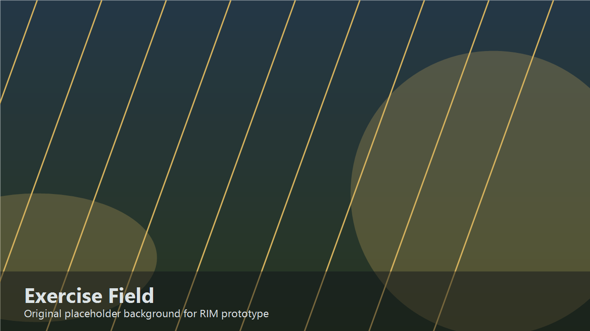

RHODES ISLAND // DEVELOPMENT ARCHIVE
让每一步开发，
都有迹可循。
欢迎来到 RIM 项目档案。这里是整个网站的起点：认识作品、查看开发路线、翻阅开发记录，或与开发组取得联系。
当前版本
PRE-ALPHA 项目类型
STRATEGY · RPG 开发状态
ACTIVE
PRE-ALPHA 项目类型
STRATEGY · RPG 开发状态
ACTIVE
RIM / MAIN TERMINAL
// 站点导航
选择你要查阅的档案
主页保留各页面的用途说明。完整内容位于独立页面，可随时通过顶部导航返回。